Private peer-to-peer encrypted terminal messaging over Bluetooth Low Energy (BLE) and LAN. No servers, no accounts, and no manual Python installation required.
%LOCALAPPDATA%\Programs\BitChat by default; no Administrator rights required).1. Verify the SHA-256 Checksum in PowerShell:
Get-FileHash .\BitChat-0.2.0-windows-x64.exe -Algorithm SHA256 # Expected Hash: F08C9DFA91FE0F1755574D4C2055166E4B95782DBF6C92748B73B7A723F3BC3E
2. Check Authenticode Signature Status:
Get-AuthenticodeSignature .\BitChat-0.2.0-windows-x64.exe
3. Run the Installer (Interactive or WinGet):
# Run the downloaded installer wizard: .\BitChat-0.2.0-windows-x64.exe # Or install via Windows Package Manager (WinGet): winget install Java-Mx.BitChat
4. Launch BitChat from a new PowerShell window:
bitchat bitchat --version bitchat --help bitchat --configure
BitChat-0.2.0-windows-x64.exe.sha256).bitchat not recognized after install: Close and reopen your PowerShell or Command Prompt window so the updated user PATH takes effect.bitchat --startup status, bitchat --startup enable, or bitchat --startup disable, or re-run the installer.